MANUFACTURING / FABRICATION / PROTOTYPING
Manufacturing & Fabrication
Turning engineering designs into functional hardware.
Through my work at Boston University's Engineering Product Innovation Center (EPIC) and Boston University Rocket Propulsion Group (BURPG), I have gained hands-on experience manufacturing mechanical components using CNC milling, wire EDM, waterjet cutting, and other fabrication techniques. My work includes supporting the development of mechanical engineering courses, manufacturing components for student projects, and fabricating hardware for rocket propulsion applications.
BU EPIC / BURPG
Laboratory Assistant / Avionics Team
Machining & Prototyping
01 / ROCKET PROPULSION
BURPG — Flare Gauge Fabrication
As part of Boston University Rocket Propulsion Group, I contributed to the fabrication of a flare gauge used in rocket propulsion hardware development. The manufacturing process involved preparing the component geometry in CAD and using abrasive waterjet cutting to produce the physical component.
Design & Geometry
The flare gauge geometry was prepared for fabrication, with attention to the component's dimensions and manufacturing requirements.
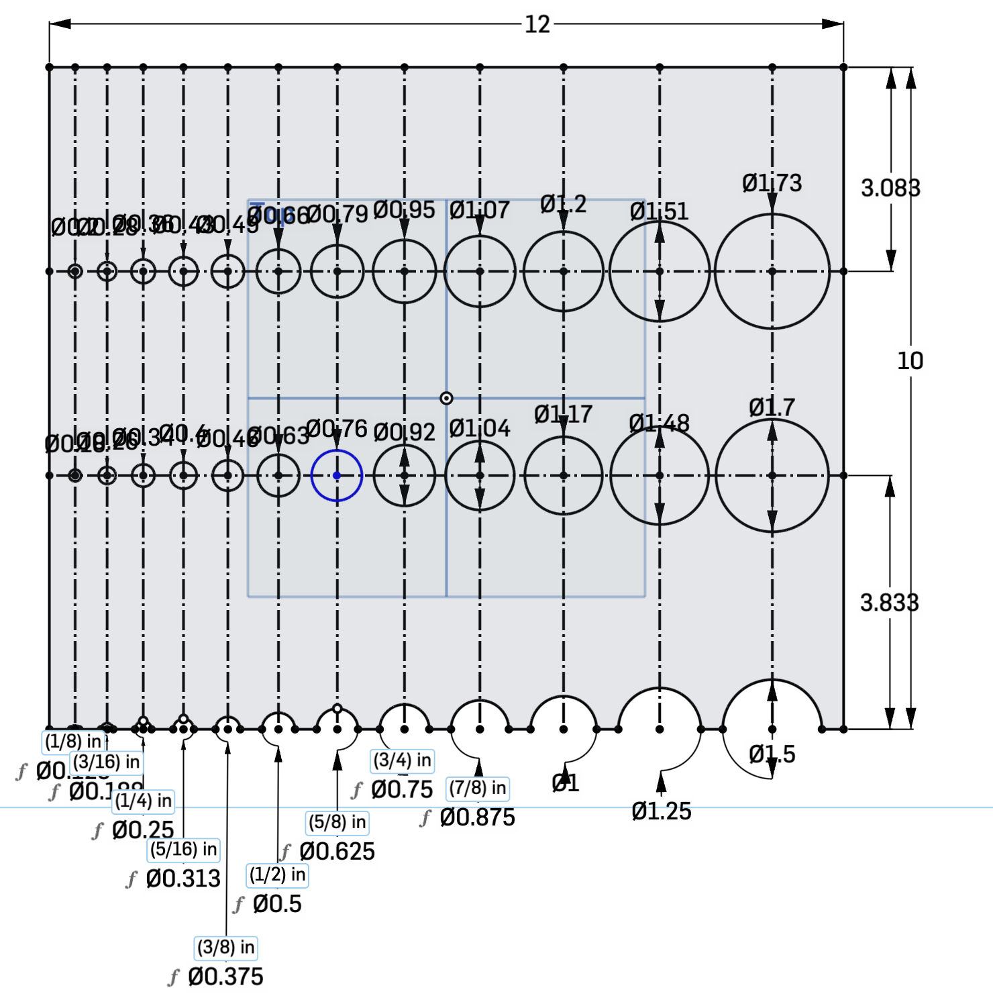
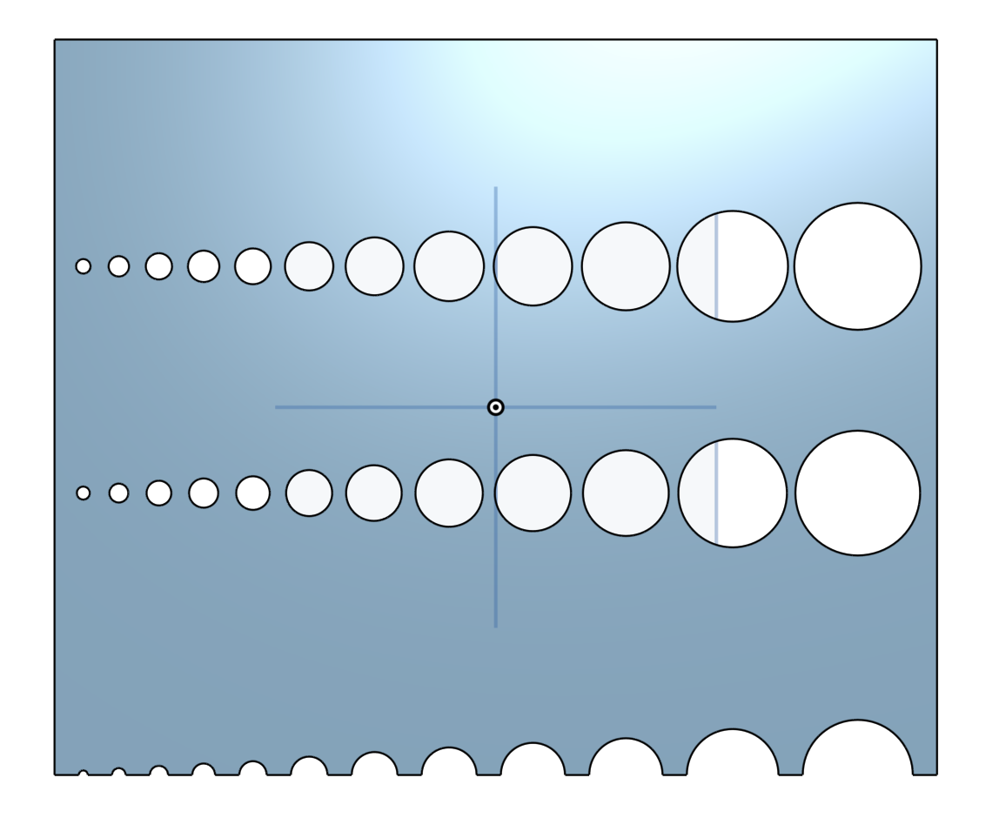
Final Manufactured Component
The completed flare gauge demonstrates the transition from digital geometry to a physical component using waterjet fabrication.
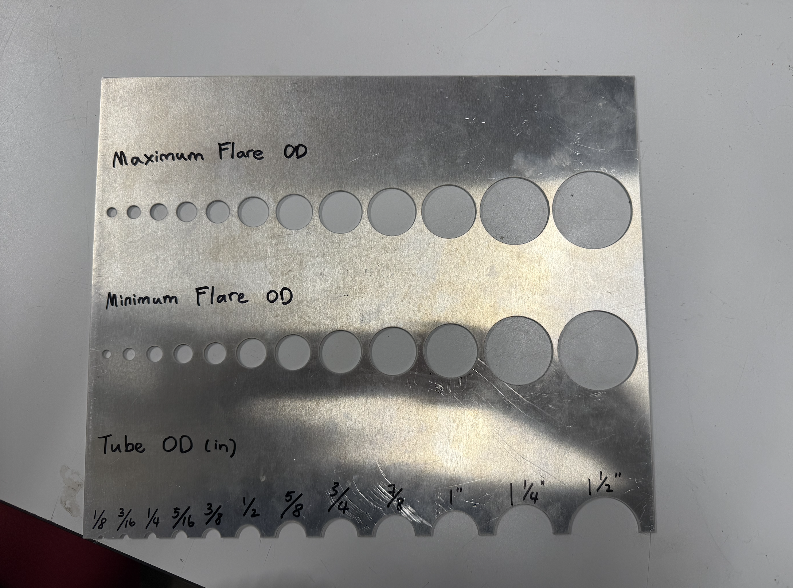
Final fabricated flare gauge for BURPG.
02 / BOSTON UNIVERSITY ACADEMY
Maze Manufacturing Workshop
Independently taught a four-session manufacturing workshop for Boston University Academy students, guiding them through the fabrication and assembly of a custom maze puzzle. The project introduced students to several manufacturing techniques, including laser cutting, 3D printing, waterjet cutting, and mechanical assembly.
Laser Cutting
Laser cut transparent acrylic top plates to enclose the maze while keeping the internal ball visible.
3D Printing
3D printed the maze patterns to create the internal pathways and walls.
Waterjet Cutting
Waterjet cut aluminum bottom plates to provide a rigid base for each maze.
Threading & Assembly
Threaded mounting holes and assembled the acrylic top plate, 3D-printed maze, and aluminum bottom plate using screws.
Project Gallery
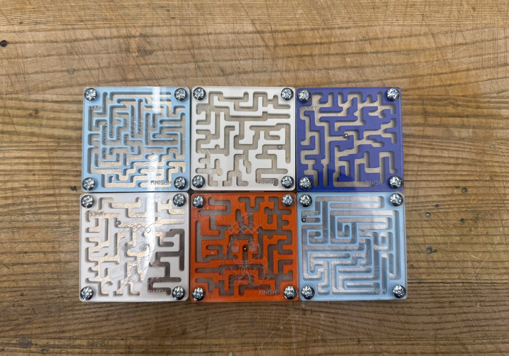
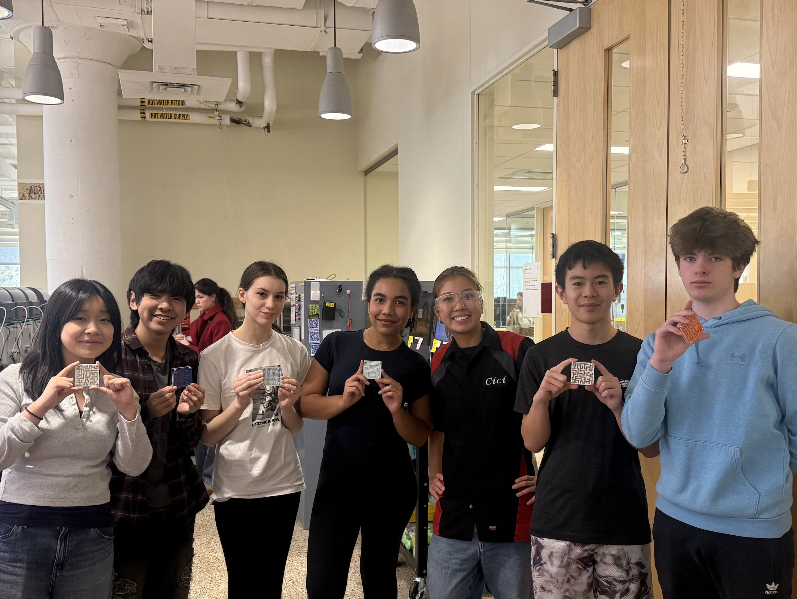
02 / MECHANICAL ENGINEERING EDUCATION
ME359 — Gear Mechanism Manufacturing
ME359 is a pilot mechanical engineering course at Boston University focused on the design and manufacturing of gear-driven mechanical systems. Students develop gear mechanisms capable of lifting loads that require greater torque than the motor can directly provide. By designing appropriate gear reductions, students learn how mechanical advantage can increase output torque while reducing rotational speed.
As a Laboratory Assistant at BU EPIC, I supported the development and prototyping of components used in the course. My contributions included manufacturing a D-shaft connection using wire EDM and CNC machining HDPE components for the gear mechanism assembly.
Wire EDM — D-Shaft Manufacturing
One of my manufacturing tasks involved producing a D-shaped shaft interface to connect the motor to the gear mechanism's backboard assembly. Because the motor shaft has a D-shaped profile, the connecting component requires a matching geometry to transmit rotational motion while preventing relative slipping.
I worked on manufacturing the D-shaft connection from scratch using wire electrical discharge machining (EDM). Wire EDM uses electrical discharges to remove conductive material, allowing precise profiles to be produced without conventional cutting forces.
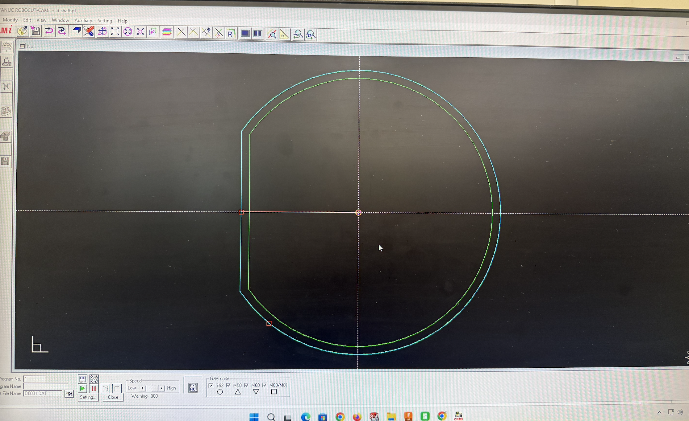
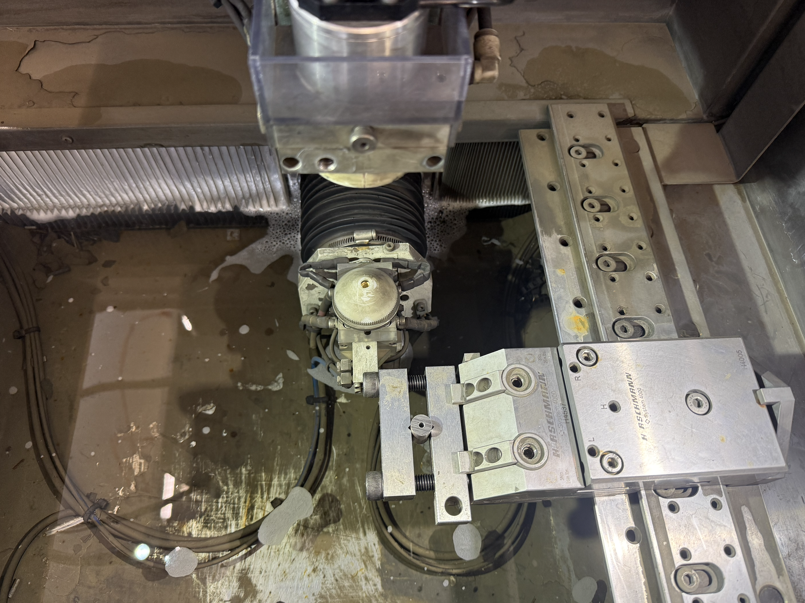
CNC Milling — HDPE Components
In addition to the D-shaft connection, I manufactured HDPE (high-density polyethylene) components used in the gear mechanism assembly. The manufacturing process involved preparing the machining setup, selecting cutting tools, and machining the required geometry using CNC milling.
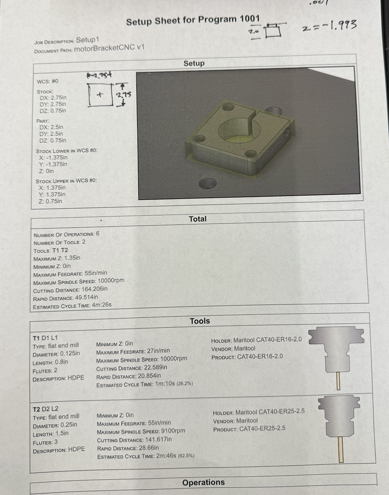
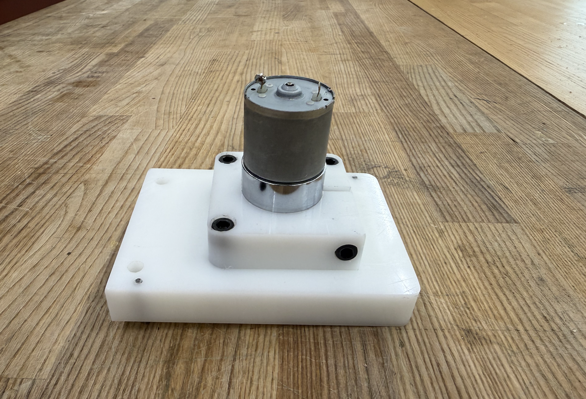
Manufacturing Process
Component Design
Prepared component geometry and reviewed dimensions required for assembly.
Machining Preparation
Prepared machining setups and reviewed cutting tools and stock dimensions.
Fabrication
Manufactured the D-shaft connection using wire EDM and HDPE components using CNC milling.
Assembly
Produced components intended to support the assembly of the gear-driven lifting system.
04 / PRECISION MACHINING
ME559 — CNC Milling
Through my work at BU EPIC, I also supported manufacturing activities associated with ME559. This work involved CNC milling and the fabrication of mechanical components, providing practical experience with machine setup, material removal, and dimensional accuracy.
CNC Machining
CNC milling allows complex mechanical geometries to be produced through computer-controlled cutting operations. The manufacturing workflow includes preparing the workpiece, securing the material, establishing machine coordinates, and executing machining operations.
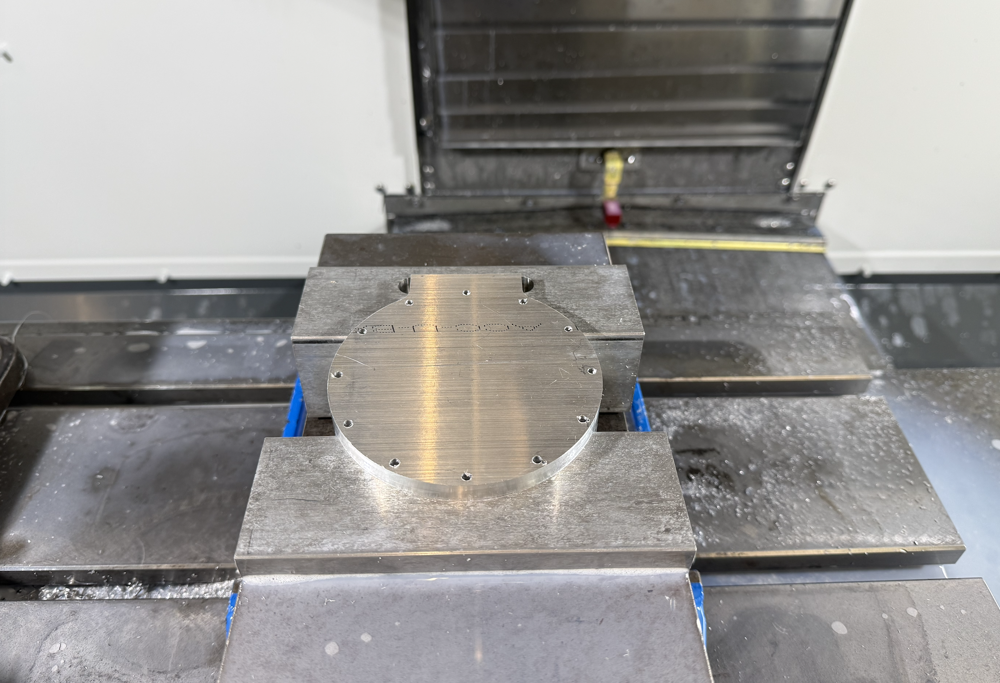
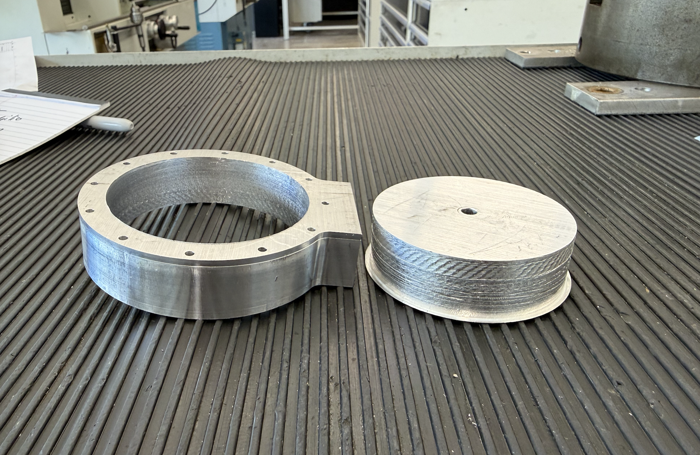
05 / TECHNICAL SKILLS
Manufacturing Capabilities
My manufacturing experience has strengthened my understanding of how mechanical designs translate into physical components. Working directly with fabrication equipment has also helped me develop a practical understanding of design for manufacturability, machining constraints, and mechanical assembly.